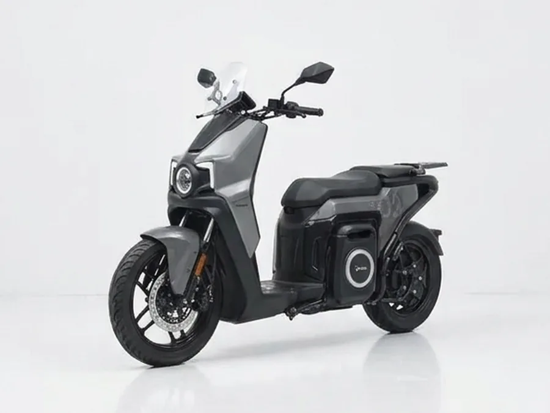
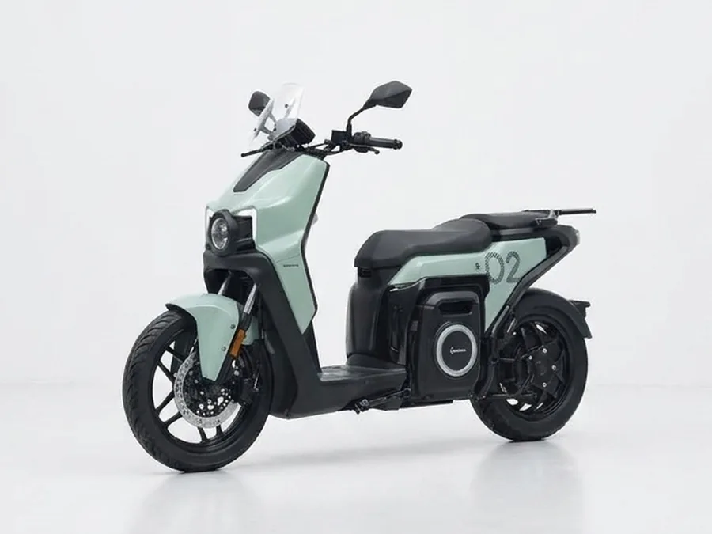
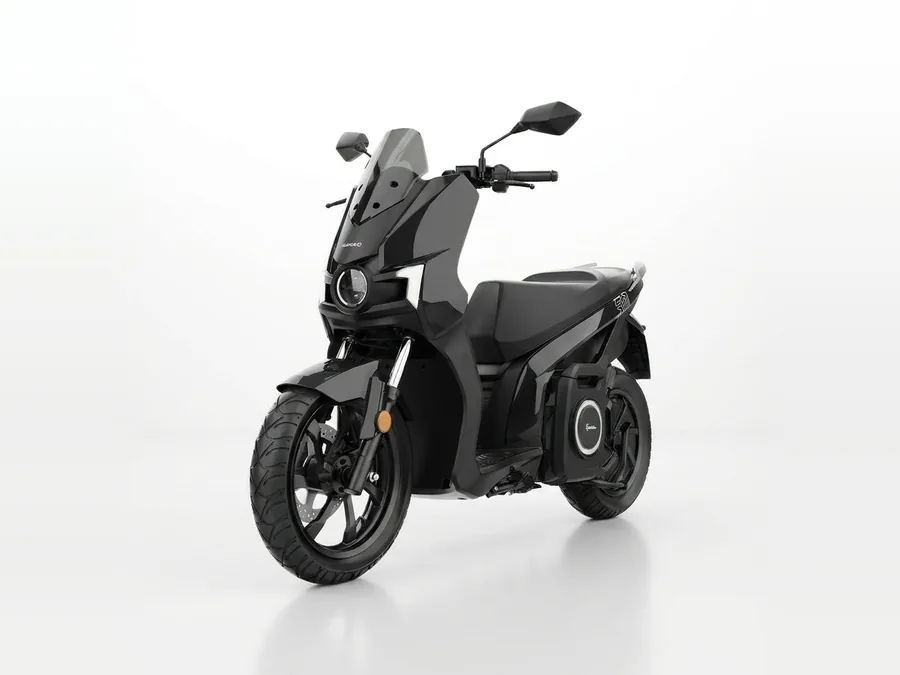
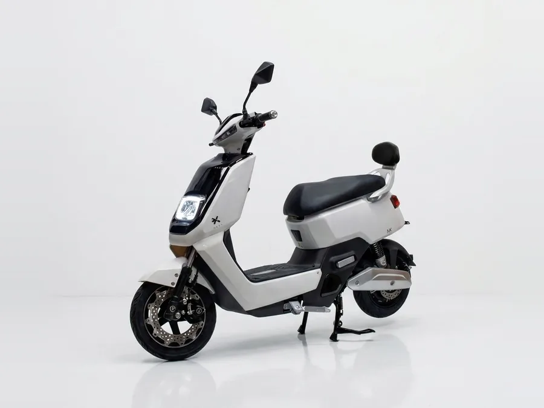
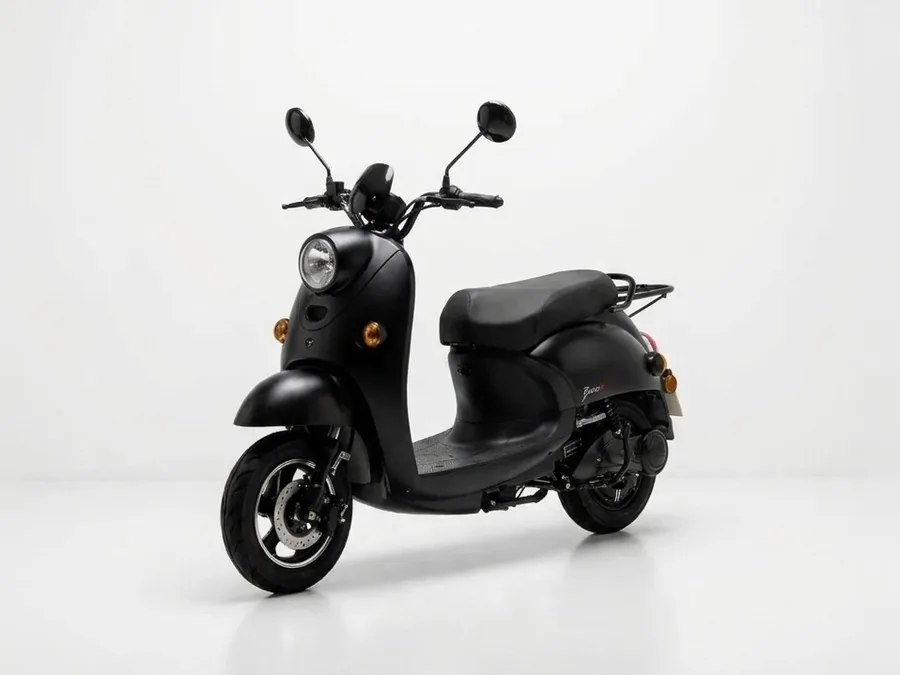
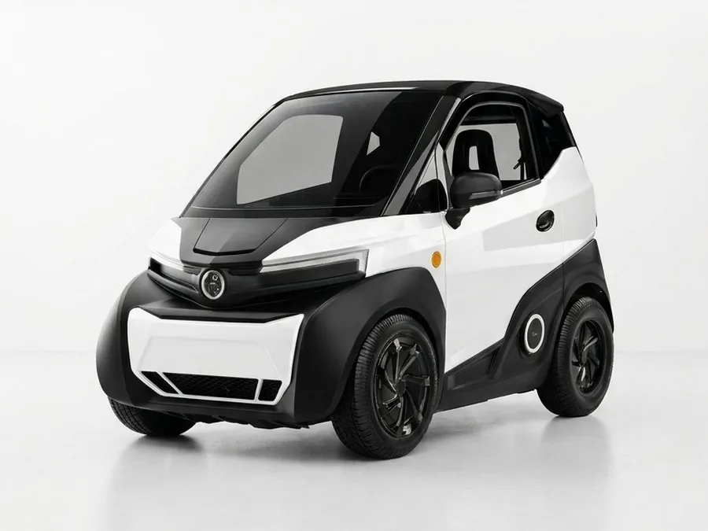

Silence · Scooter
S02 L3e
Carnet de coche o A1- 85km/h
- 138km
- 6,3kW pico
Precio PVP3.490 €Con ayudas e IRPF*2.032 €
Todas las marcas en una tienda, a un paso de casa. Ven a verlas, pruébalas y llévate la que mejor te encaje, sin que nadie te empuje a una sola marca.
Motovatio es la tienda de motos, scooters, ciclomotores y nanocars eléctricos de Grupo PlusAuto, en la Av. Cristóbal Colón, 39 y 41 de Dos Hermanas. Silence, Velca, Next, NIU, Zero, Ultraviolette, Vmoto y Nerva, juntas en un mismo sitio.

Para empezar
Silence · Scooter

Batería extraíble
Batería extraíbleSilence · Scooter

Batería extraíble
Batería extraíble
Batería extraíbleSilence · Nanocar
Ver las 65 motos y filtrar por carnet, tipo, marca y precio · Comparar dos o tres lado a lado
Si buscas una moto eléctrica en Dos Hermanas, en Motovatio tienes 65 modelos de 8 marcas para ver en persona: motos de carretera, scooters, ciclomotores y el nanocar Silence S04. Comparar una moto eléctrica por internet es difícil; aquí puedes sentarte en ella, ver el tamaño real y la batería, y probarla.
Te atendemos si vives en Montequinto, Entrenúcleos, Fuente del Rey, La Motilla o en cualquier otro barrio de Dos Hermanas, y también si vienes de pueblos cercanos como Alcalá de Guadaíra, Utrera, Los Palacios o Sevilla.
Marcas: Silence · Velca · Next · NIU · Zero · Ultraviolette · Vmoto · Nerva · Nanocars
Ven a verlas
Preguntas
En Motovatio, en la Avenida Cristóbal Colón, 39 y 41, en Dos Hermanas. Tenemos 8 marcas (Silence, Velca, Next, NIU, Zero, Ultraviolette, Vmoto y Nerva) y 65 modelos en una sola tienda, y puedes verlas y probarlas antes de decidir.
Sí. Ven a la tienda de Dos Hermanas y te explicamos cada modelo y lo pruebas. Si quieres venir a una hora concreta, escríbenos por WhatsApp o llámanos al 624 078 107.
Casi todas se llevan con el carnet de coche (B) con 3 años de antigüedad o con el A1. Los ciclomotores (L1e, hasta 45 km/h) piden el carnet AM, desde los 15 años. En cada moto te ponemos el carnet que necesita.
Depende del modelo: desde 2.032 € con ayudas (Silence S02) hasta más de 10.000 € en las de gama alta y el nanocar S04. En la web ves el precio de cada una y filtras por precio, carnet y tipo. El precio con * es el que queda con las ayudas.
Sí: el Plan Auto+ (hasta agotar fondos) y la deducción del 15 % en el IRPF para compras hasta el 31-12-2026, en las motos que cumplen las condiciones. Los ciclomotores de 45 km/h (L1e) no tienen ninguna de las dos. Aquí lo explicamos con ejemplos.
Sí. Tenemos servicio técnico de todas las marcas que vendemos, con cita previa y normalmente de un día para otro, y pedimos cualquier recambio.
Normalmente en unos 10 días, según el fabricante y el stock. Si no vives en Dos Hermanas, la enviamos a toda España; el envío lo pagas tú y te decimos cuánto según tu código postal.
Sí: con 300 € reservas la moto desde la ficha (500 € las novedades). La reserva se descuenta del precio final. Mira las novedades.
Guías: Ayudas 2026 para motos eléctricasQué carnet necesitasNovedades y reservas
También atendemos: SevillaMontequintoEntrenúcleosAlcalá de GuadaíraUtreraLos Palacios y Villafranca